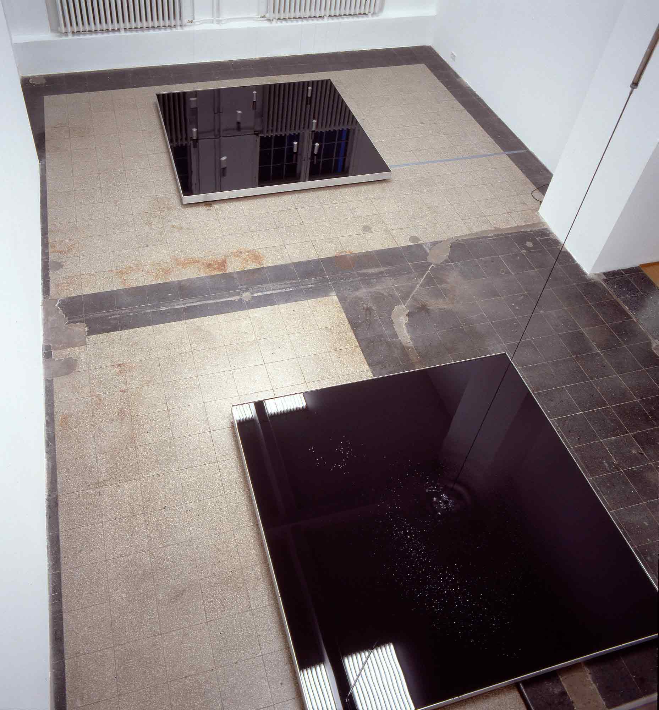
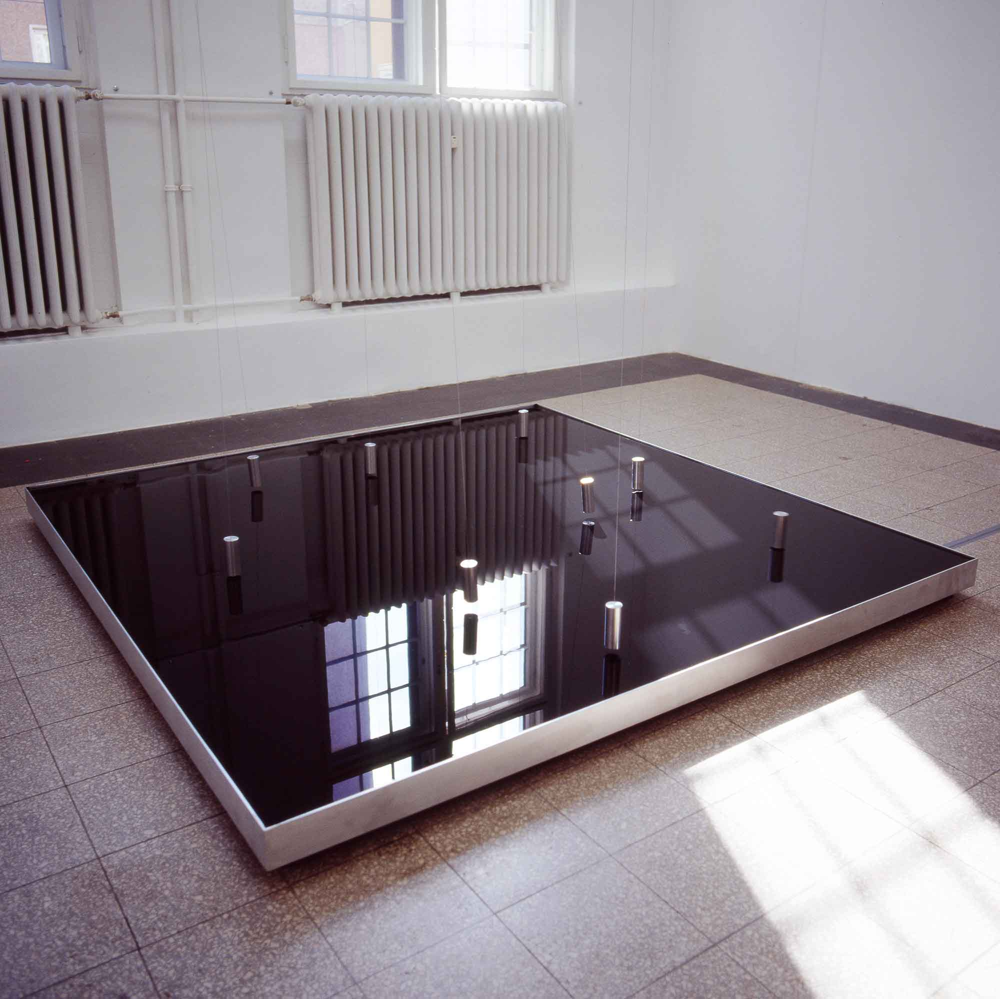

Gallerie Schipper & Krome, Berlin
2003
This exhibition displayed a pair of interrelated installation works. On the floor of the tall exhibition room
stood two identical square steel basins, each filled to the brim with waste oil.
The oil contained in the first basin was transported to the ceiling through a pipe by means of a pump. From
there, it flowed back into the basin in an even stream. Within the whitewashed space of the gallery, this
continuously flowing stream of shiny black oil had the effect of a freestanding graphic line. Only the colour
changes and the build up of bubbles on the surface of the stream betrayed the fact that the oil was in
constant motion.
Above the second basin, steel weights were suspended from the ceiling by means of steel cables. These weights
acted like mutually repelling pendulums, moving chaotically above the mirror-like surface of the oil. This
seemingly impossible perpetual motion was an effect of the permanent magnets and electromagnets attached to
the undersides of the weights, just below the surface of the oil. These magnets made it impossible for the
weights to remain in the locations towards which the force of gravity would have normally propelled them.

